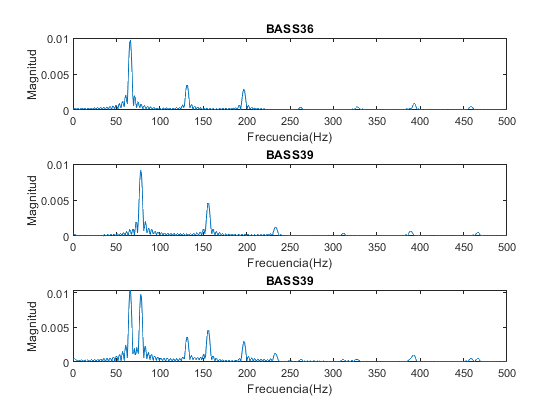
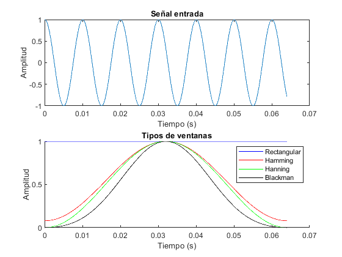
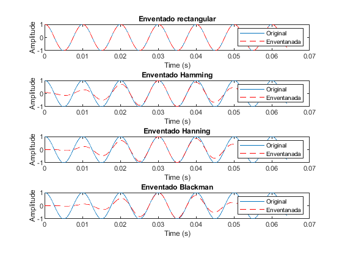
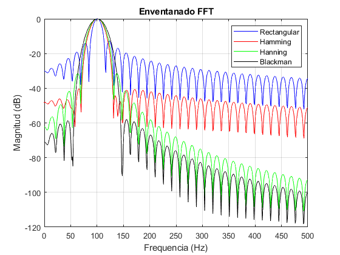
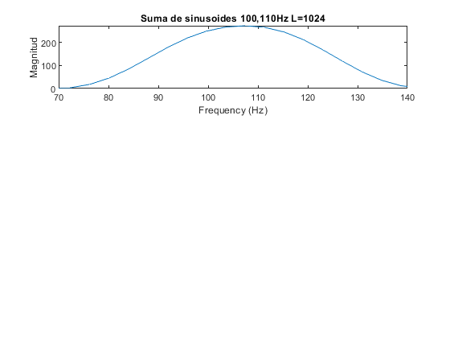
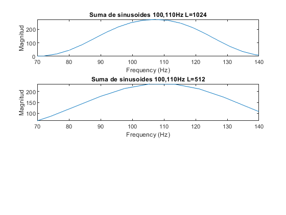
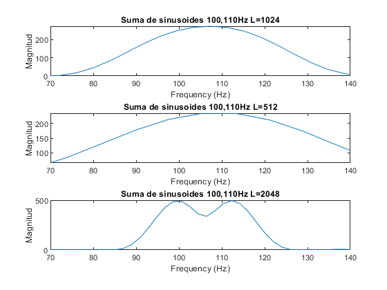
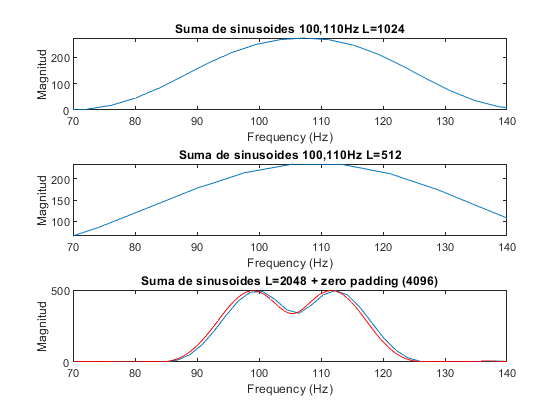
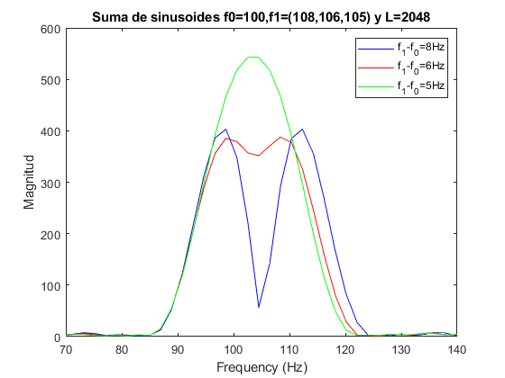

Contents
- Apartado A)
- Apartado B)
- Apartado B) (i-Dominio del tiempo)
- Apartado B) (ii-Dominio de la frecuencia)
- Apartado C)
- C.i) L=1024,fs=16000,f0=100,f1=110,Af=fs/L=15.62Hz,Hamming
- C.ii) L=512,fs=16000,f0=100,f1=110,Af=fs/L=31.25Hz,Hamming
- C.iii) L=2048,fs=16000,f0=100,f1=110,Af=fs/L=7.81Hz,Hamming
- C.iv) L=2048,fs=16000,f0=100,f1=110,Af=fs/L=7.81Hz,Hamming
- C.v) L=2048,fs=16000,f0=100,f1=?,Af=fs/L=7.81Hz,Hamming
%************************************************************************** % % PRACTICA 3 (Tema 3): Aplciaciones de la Transformada Discreta de % Fourier. % % Objetivo: Efectos del enventanado y muestreo de la DFT. % % Tipos de ventanas: % - Rectangular % - Hamming % - Hanning % - Blackman % %**************************************************************************
Apartado A)
%-------------------------------------------------------------------------- % NOTA MIDI FRECUENCIA (Hz) % 36 65.406 % 39 77.781 %-------------------------------------------------------------------------- % Objetivo: representar las notas musicales proporcionadas en el dominio de % la frecuencia (BASS36, BASS39 y BASS3639) %--> Cargar las señales sonoras (audioread) [x36 fs]=audioread('BASS36.wav'); [x39 fs]=audioread('BASS39.wav'); [x3639 fs]=audioread('BASS3639.wav'); %--> Señales en el dominio de la frecuencia (NFFT=4*(longitud de la señal)) N=4*length(x36); X36=fft(x36,N)/fs; X39=fft(x39,N)/fs; X3639=fft(x3639,N)/fs; % Eje De frecuencias: [-fs/2,Interpolacion:fs/2] Interpolacion = fs/(N); % Hz f=-fs/2:fs/(length(X36)-1):fs/2; %-------------------------------------------------------------------------- % Representaciones figure; subplot(311); plot(f,abs(fftshift(X36))); title('BASS36');xlabel('Frecuencia(Hz)');ylabel('Magnitud');xlim([0 ,500]); subplot(312); plot(f,abs(fftshift(X39))); title('BASS39');xlabel('Frecuencia(Hz)');ylabel('Magnitud');xlim([0 ,500]); subplot(313); plot(f,abs(fftshift(X3639))); title('BASS39');xlabel('Frecuencia(Hz)');ylabel('Magnitud');xlim([0 ,500]); %-------------------------------------------------------------------------- % CONCLUSIONES % Aplicabilidad: las notas musicales se componen de la frecuencia % fundamental y la suma de sus correspondientes armonicos. % Frecuencia fundamental: f0 % Armonicos: k*f0 (k numeros enteros) %--------------------------------------------------------------------------
Apartado B)
Objetivo: Analizar el efecto del enventanado con diferentes ventanas. Para cada ventana analizar: - Ancho de banda del lobulo principal (ALP). - Interferencia de los lobulos secudnarios (NLS). Datos de entrada: - Frecuencia de muestreo (fs) = 16000 Hz:
fs=16000; % - Longitud vector de tiempos (Nº de muestras) L= 1024; t=(0:L-1)/fs; % - Sinusoide a f0=100 Hz: x[n]=cos(2*pi*f0*t) f0=100; x0=cos(2*pi*f0*t'); % Tipos de ventanas: wrect=ones(L,1); % Rectangular whamming=hamming(L); % Hamming whanning=hann(L); % Hanning wblackman=blackman(L); % Blackman %--------------------------------------------------------------------------
Apartado B) (i-Dominio del tiempo)
Eventanada
x0w_rec=x0.*wrect; % Rectangular x0w_hamming=x0.*whamming; % Hamming x0w_hanning=x0.*whanning; % Hanning x0w_blackman=x0.*wblackman; % Blackman %-------------------------------------------------------------------------- % Representaciones % 1) Señal y tipos de ventanas figure; subplot(211); plot((1:length(x0))/fs,x0); title('Señal entrada');xlabel('Tiempo (s)');ylabel('Amplitud'); subplot(212); hold on; plot((1:length(x0))/fs,wrect,'b'); % Rectangular plot((1:length(x0))/fs,whamming,'r') % Hamming plot((1:length(x0))/fs,whanning,'g') % Hanning plot((1:length(x0))/fs,wblackman,'k') % Blackman title('Tipos de ventanas');xlabel('Tiempo (s)');ylabel('Amplitud'); legend('Rectangular','Hamming','Hanning','Blackman'); % 2) Señal enventanada (diferentes ventanas) figure; subplot(411); plot((1:length(x0))/fs,x0); hold on; plot((1:length(x0w_rec))/fs,x0w_rec,'--r'); % Rectangular title('Enventado rectangular');xlabel('Time (s)');ylabel('Amplitude'); legend('Original','Enventanada'); subplot(412); plot((1:length(x0))/fs,x0); % Señal original (coseno) hold on; plot((1:length(x0))/fs,x0w_hamming,'--r');% Hamming title('Enventado Hamming');xlabel('Time (s)');ylabel('Amplitude'); legend('Original','Enventanada'); subplot(413); plot((1:length(x0))/fs,x0); % Señal original (coseno) hold on; plot((1:length(x0))/fs,x0w_hanning,'--r'); % Hanning title('Enventado Hanning');xlabel('Time (s)');ylabel('Amplitude'); legend('Original','Enventanada'); subplot(414); plot((1:length(x0))/fs,x0); % Señal original (coseno) hold on; plot((1:length(x0))/fs,x0w_blackman,'--r'); % Blackman title('Enventado Blackman');xlabel('Time (s)');ylabel('Amplitude'); legend('Original','Enventanada'); %-------------------------------------------------------------------------- 
Apartado B) (ii-Dominio de la frecuencia)
Señal enventanada dominio de la frecuencia (NFFT=16*L)
X0w_rec=fftshift(abs(fft(x0w_rec,16*L))); % Rectangular X0w_hamming=fftshift(abs(fft(x0w_hamming,16*L))); % Hamming X0w_hanning=fftshift(abs(fft(x0w_hanning,16*L))); % Hanning X0w_blackman=fftshift(abs(fft(x0w_blackman,16*L))); % blackman % Eje en frecuencia f=-fs/2:fs/(length(X0w_rec)-1):fs/2; %-------------------------------------------------------------------------- % Representaciones figure; plot(f,20*log10(X0w_rec/max(X0w_rec)),'b');xlim([0 ,500]); hold on; plot(f,20*log10(X0w_hamming/max(X0w_hamming)),'r');xlim([0 ,500]); plot(f,20*log10(X0w_hanning/max(X0w_hanning)),'g');xlim([0 ,500]); plot(f,20*log10(X0w_blackman/max(X0w_blackman)),'k');xlim([0 ,500]); title('Enventanado FFT');xlabel('Frequencia (Hz)');ylabel('Magnitud (dB)'); legend('Rectangular','Hamming','Hanning','Blackman'); grid on; % Grid es para añadir cuadriculas al grafico %-------------------------------------------------------------------------- % CONCLUSIONES % 1) La TF de todas las ventanas se ha desplazado a la frecuencia fundamental % de la señal coseno definida (f0=100Hz). % 2) La ventana rectangular consigue el menor ancho del lobulo principal % ALP=(2*fs/L)=31.25Hz a cambio de la mayor interferencia de lobulos % laterales NLS=-13dB respecto de su maximo normalizado 0dB. % 3) La ventana de hamming y hanning producen un mayor ancho del lobulo % principal ALP=(4*fs/L)=62.5Hz (menor resolucion) a cambio de menor % interferencia debido a los lobulos secundarios en comparacion con la % ventana rectangular. % Especificamente, los lobulos laterales de hanning desaparecen antes que % los de hamming debido a que la ventana de hanning es mas suave en el % dominio temporal. Sin embargo, el primer lobulo de hamming NLS=-42dB % es menor que el 1er lobulo de hanning NLS=-32dB respecto del maximo % 0dB. % 4) La ventana de Blackman presenta el mayor ancho de banda del lobulo % principal ALP=6*fs/L=93.75Hz a cambio de la menor interferencias de los % lobulos secundarios NLS=-57dB y mayor velocidad de desaparicion de % dichos lobulos comparando la banda espectral definida. % 5) CASO IDEAL: ALP muy pequeña (simular una delta) e NLS minima. %--------------------------------------------------------------------------
Apartado C)
Objetivo: Asuma una resolucion del sistema fs/L ya que se permite solapamiento entre lobulos principales y comprobar en que casos se sigue detectando claramente dos tonos de igual amplitud y distinta frecuencia.
C.i) L=1024,fs=16000,f0=100,f1=110,Af=fs/L=15.62Hz,Hamming
L=1024; fs=16000; t=(0:L-1)/fs; f0=100; f1=110; x3= cos(2*pi*f0*t')+cos(2*pi*f1*t'); whamming=hamming(L); x3w=x3.*whamming; X3w=fft(x3w,4*L); % vector de frecuencia f=-fs/2:fs/(length(X3w)-1):fs/2; figure; subplot(311); plot(f,fftshift(abs(X3w)));xlim([70 ,140]); title('Suma de sinusoides 100,110Hz L=1024');xlabel('Frequency (Hz)');ylabel('Magnitud'); % Respuesta: No se pueden detectar los dos picos espectrales (f0=100 y % f1=110) ya que no existe suficiente resolucion Af=fs/L=15.62Hz. La % separacion de los dos picos es 110-100=10 Hz mientras que la resolucion % es de 15.6 Hz. %--------------------------------------------------------------------------
C.ii) L=512,fs=16000,f0=100,f1=110,Af=fs/L=31.25Hz,Hamming
L=512; fs=16000; t=(0:L-1)/fs; f0=100; f1=110; x3=cos(2*pi*f0*t')+cos(2*pi*f1*t'); whamming=hamming(L); x3w=x3.*whamming; X3w=fft(x3w,4*L); f=-fs/2:fs/(length(X3w)-1):fs/2; subplot(312); plot(f,fftshift(abs(X3w)));xlim([70 ,140]); title('Suma de sinusoides 100,110Hz L=512');xlabel('Frequency (Hz)');ylabel('Magnitud'); % Respuesta: No se pueden detectar los dos picos espectrales (f0=100 y % f1=110) ya que no existe suficiente resolucion Af=fs/L=31.25Hz. La % separacion de los dos picos es 110-100=10 Hz mientras que la resolucion % es de 31.25.6 Hz. %--------------------------------------------------------------------------
C.iii) L=2048,fs=16000,f0=100,f1=110,Af=fs/L=7.81Hz,Hamming
L=2048; fs=16000; t=(0:L-1)/fs; f0=100; f1=110; x3=cos(2*pi*f0*t')+cos(2*pi*f1*t'); whamming=hamming(L); x3w=x3.*whamming; X3w=fft(x3w,4*L); f=-fs/2:fs/(length(X3w)-1):fs/2; subplot(313);plot(f,fftshift(abs(X3w)));xlim([70 ,140]); title('Suma de sinusoides 100,110Hz L=2048');xlabel('Frequency (Hz)');ylabel('Magnitud'); % Respuesta: Si se pueden detectar los dos picos espectrales (f0=100 y % f1=110) ya que existe suficiente resolucion Af=fs/L=7.81Hz. La % separacion de los dos picos es 110-100=10 Hz mientras que la resolucion % es de 7.81 Hz. %-------------------------------------------------------------------------- % CONCLUSION % Conclusion: Al aumentar el tamaño de la ventana (L) disminuye la anchura % del lobulo principal y por lo tanto mejora la resolucion (se pueden % detectar picos mas proximos). % IMPORTANTE: Para detectar los dos picos espectrales debe ocurrir que la % resolucion debe ser menor que la separacion entre los picos espectrales. %--------------------------------------------------------------------------
C.iv) L=2048,fs=16000,f0=100,f1=110,Af=fs/L=7.81Hz,Hamming
Aumentar el tamaño de la señal de entrada concatenando ceros (zero padding)
L=2048; t=(0:L-1)/fs; f0=100; f1=110; x3=cos(2*pi*f0*t')+cos(2*pi*f1*t'); whamming=hamming(L); x3w=x3.*whamming; x3w=[x3w; zeros(2*L,1)]; % zero-padding (4096 ceros) X3w=fft(x3w,4*length(x3w)); f=-fs/2:fs/(length(X3w)-1):fs/2; hold on; plot(f,fftshift(abs(X3w)),'r');xlim([70 ,140]); title('Suma de sinusoides L=2048 + zero padding (4096)'); xlabel('Frequency (Hz)');ylabel('Magnitud'); % RESPUESTA: La nueva resolucion no ha variado del apartado anterior y sigue % siendo Af=fs/L=7.81Hz ya que la longitud de muestras de informacion de usuario % de x[n] sigue siendo la misma L=2048. Sin embargo, al anadir ceros se ha % realizado una mejor interpolacion entre las muestras en frecuencia, es decir, % se ha definido con mayor detalle los valores en frecuencia. Ahora la % separacion en muestras de frecuencia es Sep=fs/(3*L)=2.60 Hz. % Zero-padding permite obtener valores mas excatos de los picos en % frecuencia y de las amplitudes de los mismos. % IMPORTANTE: zero-padding NO AUMENTA LA RESOLUCION. La resolucion solo % depende del tipo y la longitud L de la ventana. %--------------------------------------------------------------------------
C.v) L=2048,fs=16000,f0=100,f1=?,Af=fs/L=7.81Hz,Hamming
Objetivo: modificar la frecuencia f1 manteniendo constante f0 para determinar aproximadamente la resolucion del sistema (Hz), como aquella separacion en frecuencia que permite distinguir dos picos (tonos).
%--> Prueba 1: f1=108 L=2048; t=(0:L-1)/fs; f0=100; f1=108; x3=cos(2*pi*f0*t')+cos(2*pi*f1*t'); whamming=hamming(L); x3w=x3.*whamming; X3w=fft(x3w,4*L); f=-fs/2:fs/(length(X3w)-1):fs/2; figure; plot(f,fftshift(abs(X3w)),'b'); %--> Prueba 2: f1=106 L=2048; t=(0:L-1)/fs; f0=100; f1=106; x3=cos(2*pi*f0*t')+cos(2*pi*f1*t'); whamming=hamming(L); x3w=x3.*whamming; X3w=fft(x3w,4*L); f=-fs/2:fs/(length(X3w)-1):fs/2; hold on; plot(f,fftshift(abs(X3w)),'r'); %--> Prueba 3: f1=105 L=2048; t=(0:L-1)/fs; f0=100; f1=105; x3=cos(2*pi*f0*t')+cos(2*pi*f1*t'); whamming=hamming(L); x3w=x3.*whamming; X3w=fft(x3w,4*L); f=-fs/2:fs/(length(X3w)-1):fs/2; hold on; plot(f,fftshift(abs(X3w)),'g');xlim([70 ,140]); title('Suma de sinusoides f0=100,f1=(108,106,105) y L=2048'); xlabel('Frequency (Hz)');ylabel('Magnitud'); legend('f_1-f_0=8Hz','f_1-f_0=6Hz','f_1-f_0=5Hz'); %-------------------------------------------------------------------------- % CONCLUSION % La resolucion maxima del sistema es de 106Hz-100Hz=6Hz. % Minima separacion para detectar dos tonos. %--------------------------------------------------------------------------